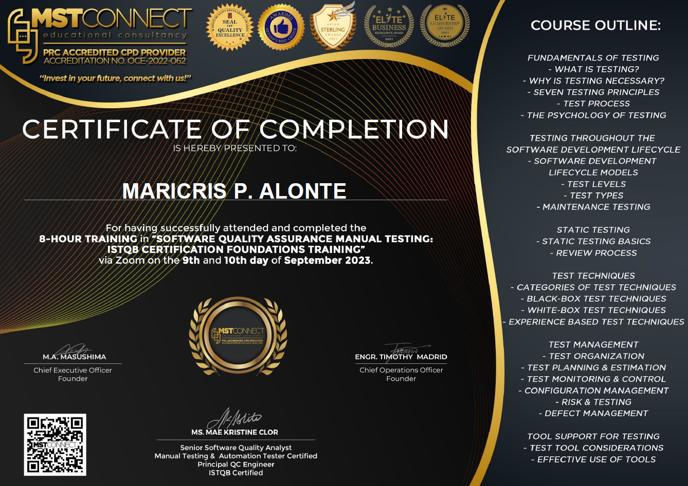
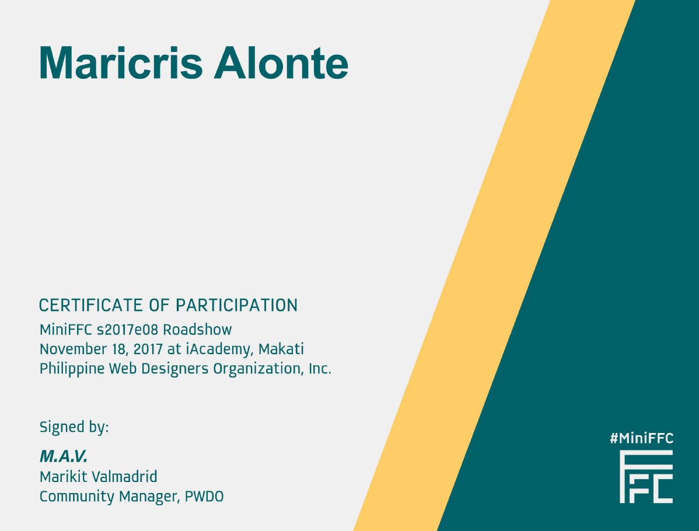

Continuous learning and professional development are core to my approach as a QA professional. Here are the certifications and training programs that have shaped my expertise in software testing and quality assurance.

Provider: MSTCONNECT PH Educational Consultancy
Type: Foundation Training
Focus: Manual Testing & QA Standards
Comprehensive foundation training in software quality assurance and manual testing methodologies, covering industry standards and best practices for effective test planning, execution, and reporting.

Provider: Philippine Web Designers Organization, Inc
Location: iAcademy, Makati
Date: November 18, 2017
Participated in an intensive web development workshop focusing on modern web technologies, design principles, and development best practices.
Provider: Udemy
Instructor: Tarek Roshdy
Type: Online Bootcamp
Intensive bootcamp covering comprehensive software testing methodologies, automation concepts, and industry best practices for quality assurance professionals.
Provider: Udemy
Instructor: Angela Yu
Type: Online Bootcamp
Comprehensive web development course covering modern technologies, frameworks, and development practices, enhancing understanding of web applications for better testing approaches.
Provider: MSTCONNECT PH Educational Consultancy
Tools: MySQL Workbench
Focus: Database Testing & Management
Hands-on workshop focusing on MySQL database operations, query optimization, and database testing methodologies essential for comprehensive QA testing.
As a dedicated QA professional, I believe in the importance of staying current with evolving technologies and testing methodologies. My certifications represent not just completed courses, but a commitment to excellence and continuous improvement in the field of software quality assurance.
I regularly participate in workshops, online courses, and industry events to enhance my skills and stay updated with the latest trends in software testing, automation, and quality assurance practices.